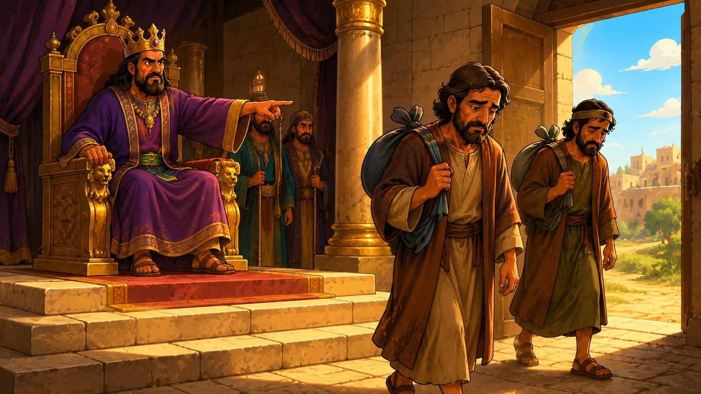

La iglesia y el dinero
Un estudio sencillo, para cualquier persona que empieza a buscar de Dios. Lo que la Biblia dice — y lo que no dice — sobre los concilios, el diezmo y el dinero. Sin palabras raras. Con dibujos.
Un concilio es simplemente una reunión
Nada más y nada menos: líderes de las iglesias reunidos para ponerse de acuerdo. La Biblia registra uno solo, en Jerusalén. Y mirarlo es como tener una lupa: ahí se ve lo bueno, lo malo y las ventajas de un concilio.
Lo malo — el problema que obligó a la reunión: algunos llegaron enseñando que sin cumplir un requisito, nadie se salva.
«Entonces algunos que venían de Judea enseñaban a los hermanos: Si no os circuncidáis conforme al rito de Moisés, no podéis ser salvos.»
Hechos 15:1Lo bueno — en vez de pelearse o callarse, se reunieron, hablaron, y Pedro dijo esto:
«¿Por qué tentáis a Dios, poniendo sobre la cerviz de los discípulos un yugo que ni nuestros padres ni nosotros hemos podido llevar? Antes creemos que por la gracia del Señor Jesús seremos salvos.»
Hechos 15:10-11La decisión — y esta frase es la vara para medir cualquier concilio, de ayer y de hoy:
«Porque ha parecido bien al Espíritu Santo, y a nosotros, no imponeros ninguna carga más que estas cosas necesarias.»
Hechos 15:28Las ventajas — cuando terminaron, enviaron una carta a Antioquía. Y la Biblia dice que al leerla, «se regocijaron por la consolación» (Hechos 15:31). Un buen concilio produce eso: gozo, unidad y claridad. Las iglesias «eran confirmadas en la fe, y aumentaban en número cada día» (Hechos 16:5).
- Quita cargas que nadie puede llevar.
- Defiende que la salvación es por gracia, no por requisitos.
- Termina en gozo y en iglesias más firmes.
- Pone cargas: cuotas, requisitos, condiciones.
- Enseña que sin cumplir su lista, no te salvas.
- Termina en miedo y en gente expulsada.
En una frase
La Biblia no está en contra de que las iglesias se reúnan y se pongan de acuerdo — Hechos 15 existe. Está en contra del espíritu contrario: el concilio de la Biblia quitó un yugo. Cualquier sistema que ponga yugos nuevos, va en dirección contraria al Espíritu Santo.
Muchas iglesias, una sola Cabeza
En el Nuevo Testamento no hay una oficina central que cobre a las congregaciones. Cada iglesia local tenía sus propios ancianos, y todos respondían directamente a Cristo.
«Y constituyeron ancianos en cada iglesia, y habiendo orado con ayunos, los encomendaron al Señor en quien habían creído.»
Hechos 14:23«Y él es la cabeza del cuerpo que es la iglesia… para que en todo tenga la preeminencia.»
Colosenses 1:18Y el requisito que la Biblia repite como tambor para todo líder de iglesia: «no codicioso de ganancias deshonestas» (1 Timoteo 3:3), «no por ganancia deshonesta, sino con ánimo pronto; no como teniendo señorío sobre los que están a vuestro cuidado, sino siendo ejemplos de la grey» (1 Pedro 5:2-3).
Pregunta sencilla
Si en la Biblia cada iglesia tenía sus ancianos y una sola Cabeza… ¿de dónde salió la pirámide donde las congregaciones compiten por recaudar y le rinden cuentas a una sede? De la Biblia no salió.
Lo que dice — y lo que le añadieron
Este es el versículo que más se usa para exigir el diezmo. Léelo completo, con su contexto:
«¿Robará el hombre a Dios? Pues vosotros me habéis robado… Traed todos los diezmos al alfolí y haya alimento en mi casa…»
Malaquías 3:8-10El alfolí era el almacén del templo. El diezmo de Israel sostenía a los levitas, que no tenían tierras: era la economía del pacto antiguo, para la nación de Israel bajo la ley. Jesús lo mencionó una sola vez — y fue para reprender a los que lo usaban de pretexto:
«¡Ay de vosotros, escribas y fariseos, hipócritas! porque diezmáis la menta y el eneldo y el comino, y dejáis lo más importante de la ley: la justicia, la misericordia y la fe.»
Mateo 23:23¿Y qué manda el Nuevo Testamento sobre dar? Tres cosas, y las tres caben en una servilleta:
«Cada uno dé como propuso en su corazón: no con tristeza, ni por necesidad, porque Dios ama al dador alegre.»
2 Corintios 9:7«Porque si primero hay la voluntad dispuesta, bien aceptada será según lo que uno tiene, y no según lo que no tiene.»
2 Corintios 8:12«Mas cuando tú des limosna, no sepa tu izquierda lo que hace tu derecha, para que sea tu limosna en secreto.»
Mateo 6:3-4El programa de «¿cuánto ganas?»
En algunas iglesias te piden tus ingresos y, con eso, te calculan cuánto debes diezmar — como si estuvieras aplicando a un programa de vivienda del gobierno. Eso no está en la Biblia. Pedro le dijo a Ananías, hablando de su dinero: «Reteniéndola, ¿no se te quedaba a ti? y vendida, ¿no estaba en tu poder?» (Hechos 5:4). El dinero era suyo. En la Biblia cada uno da según su corazón — con alegría, no con fórmula. Lo obligatorio mata la alegría, y sin alegría no es ofrenda.
Para que nadie diga que esto es contra dar
Dar es hermoso. La Biblia dice que Dios ama al dador alegre. Lo que la Biblia condena es al dador triste y forzado — que es exactamente lo que produce el diezmo obligatorio.
Jesús puso las dos escenas juntas a propósito

En el mismo capítulo, versículos seguidos, Jesús hace dos cosas. Primero condena a los líderes religiosos que «devoran las casas de las viudas, y por pretexto hacen largas oraciones» (Marcos 12:40). E inmediatamente después se sienta frente al arca, y mira cómo una viuda pobre echa ahí todo su sustento.
«¡Ay de vosotros, escribas y fariseos, hipócritas! porque devoráis las casas de las viudas, y como pretexto hacéis largas oraciones; por esto recibiréis mayor condenación.»
Mateo 23:14Jesús alabó el corazón de ella — nunca alabó al sistema que vivía de gente como ella. La viuda dio con libertad y con amor; el sistema la dejó sin su sustento. Si tu familia está en un sistema así, Jesús ya vio la escena — y ya dijo de qué lado está.
Sostenido sí. Lujos a costillas de los hermanos, no.
Aquí hay que ser honestos con la Biblia completa: sí, la Biblia dice que el pastor que trabaja debe ser sostenido por la iglesia. Eso no es pecado.
«Así también ordenó el Señor a los que anuncian el evangelio, que vivan del evangelio.»
1 Corintios 9:14«Los ancianos que gobiernan bien, sean tenidos por dignos de doble honor, mayormente los que trabajan en predicar y enseñar… Digno es el obrero de su salario.»
1 Timoteo 5:17-18Pero de ahí a carros lujosos y casas grandes a costillas de los hermanos, hay un abismo. Y Jesús mismo lo marcó:
«Mirad, y guardaos de toda avaricia; porque la vida del hombre no consiste en la abundancia de los bienes que posee.»
Lucas 12:15«Ninguno puede servir a dos señores… No podéis servir a Dios y a las riquezas.»
Mateo 6:24
¿Cómo se reconoce a cada uno? No necesitas ser teólogo: por los frutos.
- El dinero alcanza para los necesitados: «no había entre ellos ningún necesitado» (Hechos 4:34-35).
- Es transparente: «procurando hacer las cosas honradamente, no sólo delante del Señor sino también delante de los hombres» (2 Corintios 8:21).
- Da de lo suyo: «con el mayor placer gastaré lo mío… por amor de vuestras almas» (2 Corintios 12:15).
- Vive sencillo y se le puede preguntar sin miedo.
- Carros y casas de lujo a costillas de los hermanos.
- Hace mercadería: «por avaricia harán mercadería de vosotros con palabras fingidas» (2 Pedro 2:3).
- Tiene «la piedad por granjería» — el negocio de parecer santo (1 Timoteo 6:5).
- Cuestionarlo es «rebelión»; las cuentas, un secreto.
«Por sus frutos los conoceréis. ¿Acaso se recogen uvas de los espinos, o higos de los abrojos?»
Mateo 7:16Ojo: esto no es contra tu pastor
Si tu pastor vive sencillo, es transparente y el dinero se ve en la iglesia y en los necesitados — honra eso, porque la Biblia lo honra (1 Timoteo 5:17). Esta sección es una lupa, no una condena: para agradecer al bueno, y para no dejarse engañar por el otro.
Diótrefes vive
«Si no pagas, no eres miembro. Si preguntas, te expulsan.» Esa táctica tiene nombre en la Biblia: Diótrefes, el primer líder que usó la membresía como arma.
«Yo he escrito a la iglesia; pero Diótrefes, al cual le gusta tener el primer lugar entre ellos, no nos recibe… y no contento con estas cosas, no recibe a los hermanos, y a los que quieren recibirlos se lo prohíbe, y los expulsa de la iglesia.»
3 Juan 1:9-10
Y Jesús fue directo contra el amor al primer lugar y al título:
«Pero vosotros no queráis que os llamen Rabí; porque uno es vuestro Maestro, el Cristo, y todos vosotros sois hermanos… El que es el mayor de vosotros, sea vuestro siervo.»
Mateo 23:8, 11«Sabéis que los gobernantes de las naciones se enseñorean de ellas… Mas entre vosotros no será así.»
Mateo 20:25-26Entre vosotros no será así
No es pecado que una iglesia tenga orden y liderazgo — la Biblia lo establece. El pecado es el señorío: el líder que expulsa, condiciona y cobra lealtad como si la grey fuera suya. La grey es de Dios (1 Pedro 5:2).
Cómo saber si es de Dios, sin miedo y sin pleito
Los bereanos eran «más nobles» por una sola razón: escudriñaban las Escrituras cada día para ver si estas cosas eran así (Hechos 17:11). Ese es tu permiso bíblico para preguntar. Pasa cualquier iglesia por este filtro sencillo:
¿Predican gracia o requisitos?
Si para salvarte o bendecirte te ponen cuotas y condiciones, es otro evangelio (Gálatas 1:8).
¿El dar es alegre o forzado?
¿Hay libertad, o hay miedo, maldición y presión? «Dios ama al dador alegre» (2 Corintios 9:7).
¿Los líderes sirven o se enseñorean?
¿Puedes preguntar sin ser señalado? «No como teniendo señorío… sino siendo ejemplos» (1 Pedro 5:3).
¿A dónde va el dinero?
¿Se alimenta al rebaño, o el rebaño alimenta los lujos del pastor? «Por sus frutos los conoceréis» (Mateo 7:20).
¿Hay apariencia de piedad… o poder de ella?
«Tendrán apariencia de piedad, pero negarán la eficacia de ella; a éstos evita» (2 Timoteo 3:5).
«Amados, no creáis a todo espíritu, sino probad los espíritus si son de Dios; porque muchos falsos profetas han salido por el mundo.»
1 Juan 4:1La iglesia verdadera no cobra cuota
«Venid a mí todos los que estáis trabajados y cargados, y yo os haré descansar… porque mi yugo es fácil, y ligera mi carga.»
Mateo 11:28, 30«Porque donde están dos o tres congregados en mi nombre, allí estoy yo en medio de ellos.»
Mateo 18:20Si alguna vez te hicieron sentir que tu lugar en la familia de Dios depende de un pago, recuerda esto: tú perteneces a Cristo, y él ya lo pagó todo. No necesitas membresía de ningún concilio para ser iglesia.
Siguiente estudio: ¿Qué es un Apóstol? →